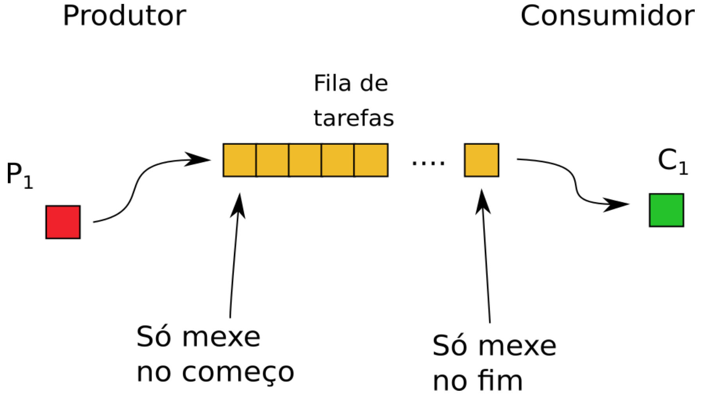
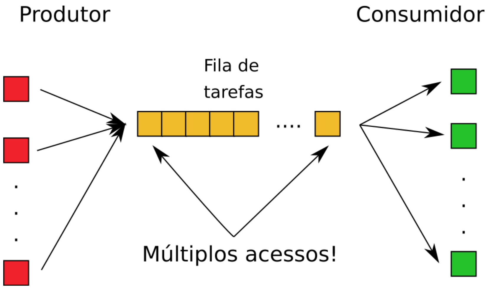

21 - Semáforos II e Modelos de concorrência¶
Na aula anterior, trabalhamos com semáforos de um ponto de vista principalmente conceitual.
Aproveitaremos a aula de hoje para fixar nosso conhecimento sobre semáforos, verificando como implementar semáforos POSIX. Além disso, iremos explorar o modelo produtor consumidor.
Correção Rendez-vous POSIX¶
Implemente (do zero) um programa que cria duas threads e as sincroniza usando RDV. Ambas deverão fazer um print antes e um depois do ponto de encontro. Use o seguinte esquema como guia.

As partes A e B podem ser feitas em qualquer ordem, mas ambas obrigatoriamente devem ocorrer antes de iniciar a execução de C e D. Note que C e D também podem ser feitas em qualquer ordem.
Exercise
Os semáforos poderiam ser inicializados com 1?
Resposta
Não! Qualquer um deles que for inicializado com 1 fará com que a thread que espera por ele passe direto na barreira, um resultado indesejado. Recomendo que teste e rode várias vezes!
Exercise
Dentro das threads, podemos inverter e fazer o sem_wait antes do sem_post?
Exemplo:
void *thread1(void *_arg) {
t_arg *arg = _arg;
printf("A\n");
sem_wait(arg->s2); // ALTEROU AQUI
sem_post(arg->s1); // ALTEROU AQUI
printf("C\n");
return NULL;
}
Resposta
Se alterar em apenas uma thread, até irá funcionar. Supondo a alteração na thread1, o resultado prático é que teríamos uma ordem fixa, a thread1 sempre esperaria o aviso de que a thread2 chegou na barreira antes de avisar que ela mesmo chegou.
Entretanto, se ambas as threads fossem alteradas para ter o sem_wait antes do sem_post então a thread1 esperaria pelo aviso da thread2, mas a thread2 também esperaria pelo aviso da thread1. Então ambas as threads ficariam travadas, em estado de deadlock.
Aplicação de Semáforos¶
Já vimos o uso de semáforos para sincronizar threads, de forma que as threads esperem pelas outras em um ponto de encontro. Agora, vamos utilizar semáforos para controlar a quantidade de threads que podem acessar ao mesmo tempo um recurso computacional.
Example
Implemente (do zero) um programa que cria N threads, entretanto, apenas MAX threads podem executar ao mesmo tempo.
Sua thread pode fazer um procedimento qualquer, por exemplo, um loop infinito que simula um processamento de dados!
Tip
Tente pensar no que acontece com sem_wait e sem_post quando o semáforo é inicializado com valor maior que zero.
Modelos de concorrência¶
Vamos implementar o modelo produtor consumidor, levando em consideração que:
- As threads produtoras e consumidoras compartilham um cache único. Pode ser um array de inteiros.
- Ambas as threads rodam em loop infinito simulando um stream de dados. A cada iteração, as threads sorteiam um valor aleatório de segundos (por ex, entre
0e5) e então tentam pruduzir / consumir os dados.
Faça!
Implemente (do zero) um programa que cria uma thread produtora e uma thread consumidora.
Você pode supor que a thread produtora adiciona números na fila de tarefas, enquanto a thread consumidora espera por um segundo ou dois (para simular processamento) e então exibe o número consumido na saída padrão.

Exercise
Como os índices do cache serão manipulados pelas threads produtora e consumidora?! Qual tipo de dados é indicado?
Resposta
Procure por fila circular, buffer circular!
Exercise
Como podemos controlar para que a thread produtora espere caso o buffer esteja cheio?
Resposta
Podemos utilizar um semáforo inicializado com o tamanho no buffer. Cada produção realiza um wait neste semáforo. Quando o semáforo zera então o cache está cheio e a thread produtora deve esperar. Tente pensar se o consumo deve ou não atualizar este semáforo!
Exercise
Como podemos controlar para que a thread consumidora espere caso o buffer esteja vazio?
Resposta
Podemos utilizar um semáforo inicializado com zero. Quando a thread produtora produz algo, este semáforo recebe um post. Tente pensar se o consumo deve ou não atualizar este semáforo!
Example
Implemente uma versão com M threads produtoras e N threads consumidoras.
